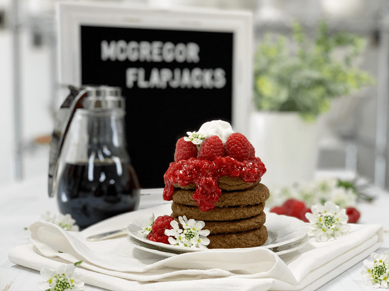
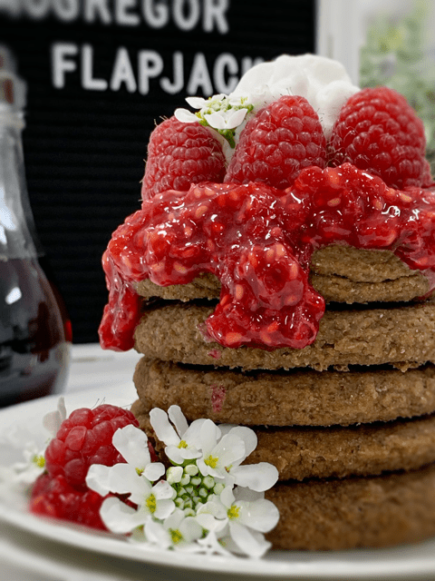
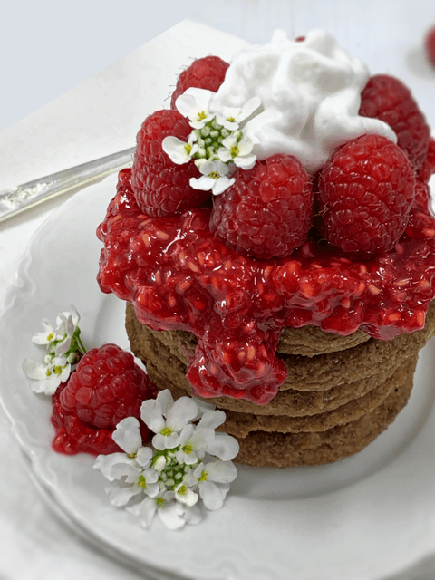
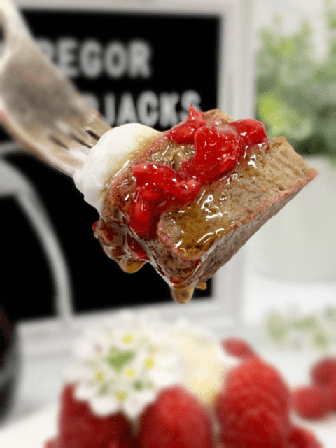
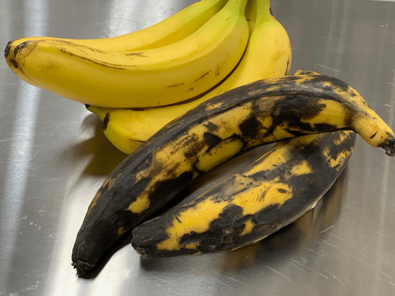
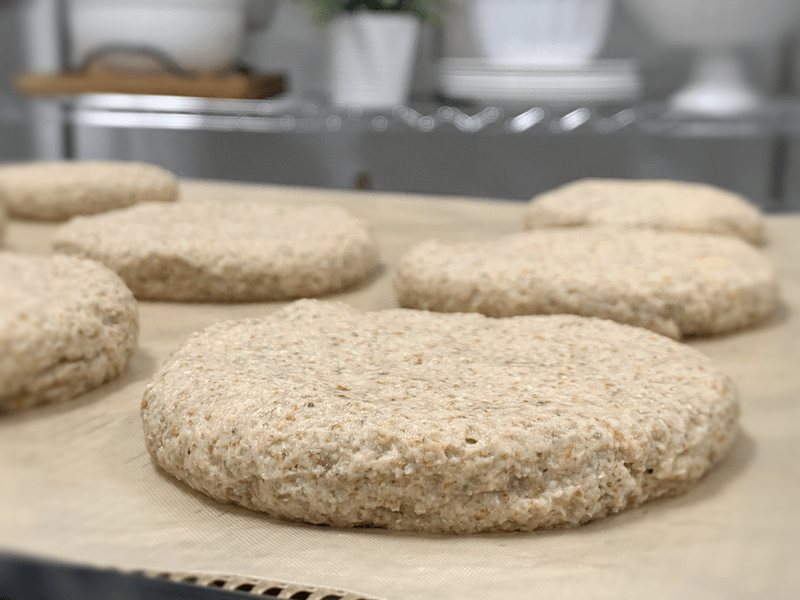

McGregor’s Flapjacks (pancakes)
Today’s creation came as a recipe request from one of our members, Mrs. McGregor. She was hungry for pancakes and was seeking a raw vegan version to fulfill her hunger for a good home comfort food. I had a few other goals for this pancake; I wanted it to be gluten-free, grain-free, no-added-sugar, and vegan… and did I mention RAW? To be honest, I had a tiny, itty bitty, weee little hesitancy in wanting to reinvent the pancake. Why?…

Well, pancakes are a well-LOVED breakfast food, and it’s a mighty tall order to recreate something with the criteria listed and yet still meet the expectations of this comfort food. Every country has a pancake: a flattened sweet or savory cake of various thicknesses, fillings, and toppings, bound in union, creating a plate of ultimate comfort food.
- The classic American pancake is also known as flapjacks, hotcakes, or pancakes. They are made from a batter that typically includes baking powder to make them thicker and fluffier than other varieties. Considered a go-to breakfast dish, pancakes are often served with sweet toppings and can be flavored with batter mix-ins such as blueberries or chocolate chips.
- Canada has Buttermilk pancakes – The secret weapon to its signature thick and fluffy texture: baking powder.
- The Austrians have Kaiserschmarrn – (also known as a shredded pancake). These light, caramelized pancakes are made from a sweet batter using flour, eggs, sugar, salt, and milk, and are baked in butter.
- In China: Cong you bing or Scallion Pancakes – Better referred to as Pan-fried pancakes. They are typically made from dough, not batter, and are chewy, flaky, and savory. Often served with a dipping sauce made from soy sauce.
- Eastern Europe: Blini or Blintz – They are thin pancakes (thicker than French crêpes) and are made with wheat or buckwheat flour and yeast, and filled with sweet or savory stuffing.
- Finland pancakes are called Pannukakku. They are baked in a rectangle or circular pan to golden, puffy perfection. They are cut up into single-serving slices and top with powdered sugar, cream, fruit, and other sweet fixings.
- In Mexico, they are called Hotcakes. They are thick and fluffy, similar to American pancakes made with cinnamon.
“ORDER UP! FRESH HOT MCGREGOR SHORT STACK!”

Seriously… the list goes on and on when it comes to learning about all the different ways pancakes are enjoyed around the world. So, as you can see, this was no easy task. In order to wrap my head around this endeavor, I had to reel in my thinking and just get down the basics of how I remembered cooked pancakes. Fluffy, bready, slightly sweet, and warm.
Raw Culinary Learning Corner
What I LOVE about recipe requests is that most of them come from the cooked world. People want me to take cooked, processed foods and reinvent them into something similar yet made with whole foods, and are delicious, and nutritious! Half the fun is recreating them, and the other half of the fun is about sharing how and why I used the ingredients that I choose to replicate a comfort food memory. So with that being said, let me dive into the ingredients that I used.
Plantains
- Think of plantains as the banana doppelgänger!
- For this recipe, we are using RIPE plantains (skins of the plantain are mostly black).
- WHY? They add a natural sweetness to the recipe and well as a fluffy texture when blended.
- Plantains can be eaten at different stages of ripeness; their flavor and uses differ depending on how ripe they are though they must be ripe to enjoy them raw.
- When the peel of a plantain is green to yellow, the flavor of the flesh is bland, and its texture is starchy as the plantain ripens, its high starch content changes to sugar and the peel changes to brown or black. The interior color of the fruit remains creamy and white to yellow, but it now has a sweet flavor and banana aroma. To hasten ripening store plantains in a loosely closed brown paper bag.
Bananas
- I used bananas in the recipe to support the plantains, to add bulk and creaminess to the batter, and to sweeten it.
- Sweetness control… here is one thing that you need to know about using ripe bananas in this recipe. The riper the banana, the sweeter the outcome of the recipe will be. This recipe isn’t meant to be a savory one, but you can control the sweet level based on the ripeness of the banana. I used REALLY ripe bananas, which I loved in the recipe, but Bob felt it was too sweet. So if you want to reduce that, use a pure yellow banana without spots on it.

Irish Moss Gel
- I enjoy using Irish moss in my raw bread-like recipes. It adds a sponginess (loft) to recipes where we want to achieve that airy yeast-like texture.
- You can learn more about the health benefits (here) as well as how to make Irish moss gel.
- If you don’t have Irish moss and are in a hurry to make this recipe, you could replace it with 2-3 Tbsp psyllium husks. The outcome of the recipe will differ in texture from how I designed the recipe, so keep that mind. Psyllium will cause the pancakes to be denser and drier on the palate.
Chia Seeds
- I added them to the recipe for many reseasons; they are a nutritional powerhouse, and they act as a binder when introduced to wet ingredients.
- You can learn more about the health benefits of chia seeds (here).
- If need be, you can replace them with ground flax seeds. Since chia seeds don’t have any taste, the flax seeds will add another layer of flavor to the pancake (slight nuttiness).
Almond Pulp
- Almond pulp is a by-product of making almond milk, and who doesn’t love a fresh, chilled glass of milk with their pancakes? Now that you made the milk to wash down each delicious bite let’s use the pulp!
- The almond pulp adds bulk, structure, and a lightness to the pancake. When I was creating the recipe, I made one pancake without the almond pulp, and it turned out flat and sweeter.
- Learn more about almond pulp (here).
- I know some of you will be tempted to use ground almonds instead of the pulp. I would advise against that urge. The pancake will take on a different texture and flavor altogether.
Timing is Everything
- Lastly, yet equally as important as to what ingredients were being used in this recipe… is the dry time. Over dry them, and they will be rubbery and dense. Under dry them, and they will be soggy in the center. Just like Goldilocks and the Three Bears – fairy tale story, we want them to be…. juuuuuust right!
- So when it comes to the first time making these in your kitchen, document the dry time that provides you the best raw pancake experience. I documented mine down below in the instructions… use them as a guideline.
Ok, I have talked your ear off or perhaps made your eyes burn from reading so much (sorry about that, don’t want to injure anybody parts hehe)… but I felt it was important to share how I think and how I came up with this recipe. I hope you truly enjoy this experience. Please leave a comment below and have a blessed day, amie sue

Ingredients:
yields 14 (1/2 cup) or 28 (1/4 cup)
Dough:
- 2 large (390 g) ripe plantains
- 2 (225 g) ripe banana
- 1/4 cup (70 g) Irish moss gel
- 1/4 cup (35 g) chia seeds, ground
- 1/4 tsp (2 g) Himalayan pink salt
- 2 cup (400 g) moist almond pulp
Topper Options
- Maple syrup drizzle
- A dollop of nut or seed butter
- Mashed fresh berries
- Coconut Whip cream
- Sprinkle of crushed nuts
Preparation:
- Tempted to substitute ingredients? Please make sure you thoroughly read what I shared above before doing so.
- In the food processor, combine the plantains, banana, Irish moss, chia seeds, and salt. Process until creamy smooth.
- Add the moist almond pulp and mix it into the other ingredients by hitting the pulse button. You don’t want to overmix the almond pulp… if you do, it will become denser, and we want to keep it more fluffy.
- Let the mixture sit for 15 minutes to thicken.
- If you don’t have Irish moss, you can use 2-3 Tbsp of psyllium husks, but I highly recommend the Irish moss because it gives the pancakes a better loft/sponginess.
- I don’t recommend combining these ingredients in a blender; it will reduce the amount of air that gets whipped into the batter and make the pancakes denser and flatter.
- Drop a 1/4 – 1/2 cup worth of dough in your hand and gently create a ball, then place on the non-stick sheet that comes with the dehydrator.
- If you don’t have non-stick sheets, use parchment paper, but not wax.
- Spread to about 1/2″ thick circles.
- I have a cookie scoop that holds 1/4 cup of batter. I used this utensil to get the best loft and shape to the pancakes. You can find that scoop (here).
- The reason for creating the balls of the batter is to create that fluffy round-edged look.
- Dehydrate at 115 degrees (F) for roughly 4 hours, flip the pancakes over onto the mesh dehydrator sheet and peel off the non-stick sheet.
- If too much batter sticks to the non-stick sheet, it’s not ready. Let it dry for another hour and then try again.
- Continue to dry for about 4 hours. You don’t want the pancakes to dry out completely; we are doing our best to mimic the texture of cooked pancakes (as much as we can anyway). They darken considerably during the drying process.
- Enjoy straight out the dehydrator nice and warm with a light drizzle of maple syrup, or perhaps mashed fresh berries.
- Store leftovers in the fridge in an airtight container for 5-7 days.

I shared this photo because I wanted you to see the level of ripeness on the bananas and plantains that I used.

© AmieSue.com